# impor library tidyverse
library(tidyverse)
# baca file CSV berisi data WVS
wvs_cleaned <- read_csv("data-output/wvs_cleaned_v1.csv")
# Konversi variabel kategorikal menjadi faktor
columns_to_convert <- c("country", "religiousity", "sex", "marital_status", "employment")
wvs_cleaned <- wvs_cleaned |>
mutate(across(all_of(columns_to_convert), as_factor))
# lihat sekilas datanya, perhatikan tipe datanya!
glimpse(wvs_cleaned)Visualisasi Data dan Statistik Deskriptif
ISEI Workshop
Garis Besar Hari Ini
- Statistik deskriptif univariat dan visualisasi
- untuk variabel kontinu
- untuk variabel kategorikal (frekuensi atau proporsi)
- Statistik deskriptif bivariat (dua variabel) dan visualisasi
- keduanya kategorikal
- keduanya kontinu (+ plot korelasi)
- satu kategorikal, satu kontinu
- Menggunakan Facet
- Praktik terbaik
- Rekap + Kuis!
Checklist Saat Memulai RStudio
- Buka proyek yang kita buat di sesi sebelumnya dan buka file R script.
- Pastikan panel
Environmentkosong (klik ikon sapu untuk membersihkannya) - Bersihkan juga
ConsoledanPlots. - Jalankan ulang bagian
library(tidyverse)danread_csvdari sesi sebelumnya
Penyegaran: Memuat CSV ke dalam Dataframe
Gunakan read_csv dari paket readr (bagian dari tidyverse) untuk memuat data kita ke dalam dataframe
Penyegaran: Statistik Deskriptif
Statistik Deskriptif Univariat (satu variabel)
- Ukuran tendensi sentral:
mean(),median(),Mode() - Ukuran Variabilitas:
min(),max(),range(),IQR(),sd()(standar deviasi),var()(varians) - Bentuk distribusi:
skewness()dankurtosis()dari librarymoments. Lebih mudah dilihat dengan histogram
- Ukuran tendensi sentral:
Statistik Deskriptif Bivariat (dua variabel)
- Tabel kontingensi / tabulasi silang (untuk data kategorikal)
- Kovarians - menggambarkan bagaimana dua variabel bervariasi bersama
- Korelasi - menggambarkan kekuatan dan arah hubungan dalam sebuah sampel. (Jika kita ingin menggunakannya untuk menyimpulkan tentang populasi dari sampel, itu termasuk statistik inferensial)
- Visualisasi misalnya Scatterplot, boxplot berdampingan, stacked bar chart, dll.
Penyegaran: Fungsi Dasar R untuk Statistik Deskriptif
Minggu lalu, kita telah mempelajari beberapa fungsi dasar R untuk statistik deskriptif.
mean(): rata-rata aritmetikamedian(): nilai tengahsd(): standar deviasivar(): variansrange(): rentang nilaiIQR(): rentang interkuartilsummary(): menyediakan ringkasan statistik deskriptif- Fungsi
Mode()dari paketDescTools: nilai yang paling sering muncul 1
Penyegaran: Data Panjang vs Lebar
Data panjang:
Setiap baris adalah satu observasi unik.
Ada kolom terpisah yang menunjukkan variabel atau jenis pengukuran
Format ini lebih “mudah dipahami” oleh R, lebih cocok untuk visualisasi (yang akan kita pelajari lebih lanjut minggu depan!)
Data lebar:
Setiap baris adalah nilai dalam variabel.
Setiap kolom adalah nilai dalam variabel –> semakin banyak nilai yang dimiliki, semakin “lebar” datanya
Format ini lebih intuitif bagi manusia!
Data Panjang vs Lebar: Contoh
Long data:
Warning: package 'kableExtra' was built under R version 4.4.3
Attaching package: 'kableExtra'The following object is masked from 'package:dplyr':
group_rows`summarise()` has grouped output by 'country'. You can override using the
`.groups` argument.| country | age_group | count |
|---|---|---|
| CAN | 18-28 | 712 |
| CAN | 29-44 | 1232 |
| CAN | 45-60 | 1061 |
| CAN | 61+ | 1013 |
| NZL | 18-28 | 27 |
| NZL | 29-44 | 119 |
| NZL | 45-60 | 222 |
| NZL | 61+ | 292 |
| SGP | 18-28 | 246 |
| SGP | 29-44 | 511 |
| SGP | 45-60 | 550 |
| SGP | 61+ | 418 |
Wide data:
| country | 18-28 | 29-44 | 45-60 | 61+ |
|---|---|---|---|---|
| CAN | 712 | 1232 | 1061 | 1013 |
| NZL | 27 | 119 | 222 | 292 |
| SGP | 246 | 511 | 550 | 418 |
Data Panjang vs Lebar: Cara Mengenali
Perhatikan kolom-kolom pada data.
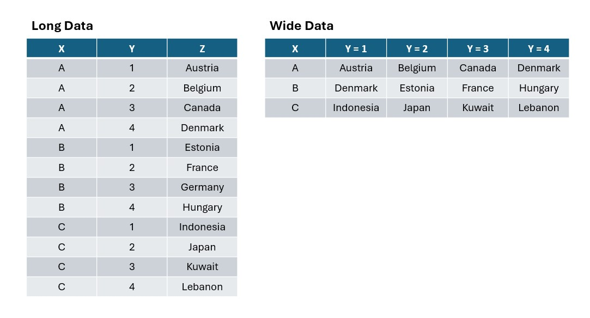
Statistik Deskriptif Univariat + Visualisasi
Ukuran Tendensi Sentral
Mari kita mulai dengan memeriksa variabel age dalam dataset kita.
Warning: package 'DescTools' was built under R version 4.4.3# jika muncul error, instal library terlebih dahulu dengan kode ini:
# install.packages("DescTools")
# Statistik dasar
mean_age <- mean(wvs_cleaned$age, na.rm = TRUE)
median_age <- median(wvs_cleaned$age, na.rm = TRUE)
mode_age <- DescTools::Mode(wvs_cleaned$age, na.rm = TRUE)
# Cetak hasil
cat("Mean age:", mean_age, "\n") # cat adalah singkatan dari concatenateMean age: 47.96408 Median age: 48 Most frequently occuring age: 54 Cara kita menginterpretasikan / melaporkan ini:
“Distribusi usia dari sampel ini cukup simetris, ditunjukkan oleh nilai mean (48 tahun) dan median (48 tahun) yang sangat berdekatan. Modus 54 tahun menunjukkan sedikit kemiringan ke kanan (right-skew) dalam distribusi usia, dengan konsentrasi partisipan di usia pertengahan 50-an.”
Ukuran Variabilitas atau Dispersi
Variance of age: 279.6066 Standard deviation of age: 16.72144 Range of age: 18 to 93 Interquartile range of age: 28 Cara kita menginterpretasikan / melaporkan ini:
“Distribusi usia dari sampel ini cukup tersebar luas. Dengan standar deviasi 16,72144, menunjukkan bahwa usia sebagian besar individu menyimpang dari rata-rata sekitar 16,72 tahun. Rentang usia membentang dari 18 hingga 93 tahun, yang mencakup berbagai kelompok usia dalam sampel. Rentang interkuartil (IQR) sebesar 28 tahun, yang mewakili 50% data tengah, menunjukkan distribusi usia yang cukup luas di bagian tengah dataset.”
Bentuk Distribusi
Fungsi skewness() dan kurtosis() tersedia melalui paket R bernama moments. Anda mungkin perlu menginstalnya terlebih dahulu sebelum memanggil library dan fungsi-fungsinya seperti pada kode di bawah ini.
Skewness of age: 0.1009475 Kurtosis of age: 2.018238 Cara kita menginterpretasikan / melaporkan ini:
“Distribusi usia memiliki kemiringan ke kanan yang sangat sedikit (skewness = 0,10), artinya terdapat sedikit lebih banyak outlier ke arah usia yang lebih tua, tetapi kemiringannya minimal karena nilai antara -0,5 dan 0,5 dianggap kira-kira simetris. Kurtosis sebesar 2,02 lebih rendah dari kurtosis distribusi normal yaitu 3, menunjukkan distribusi ini bersifat platikurtik - memiliki ekor yang lebih ringan dan lebih seragam atau ‘lebih datar’ dibandingkan distribusi normal.”
Visualisasi dengan ggplot - Histogram
Mendeskripsikan sebaran dan bentuk distribusi hanya dengan kata-kata tidaklah produktif, sehingga biasanya disertai dengan visualisasi.
ggplotadalah paket visualisasi yang termasuk dalam pakettidyverseBekerja paling baik dengan data dalam format panjang (long format), yaitu satu kolom untuk semua dimensi/ukuran dan kolom lain untuk nilai setiap dimensi/ukuran.
Visualisasi dengan ggplot - Histogram
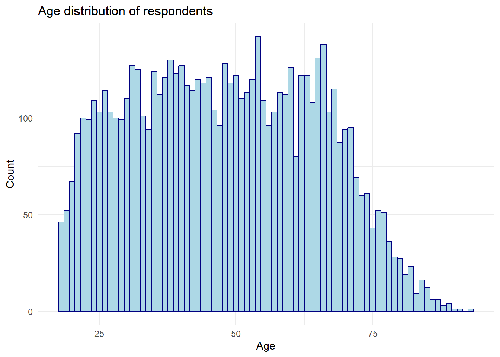
Anatomi Kode ggplot
Grafik yang dibuat dengan ggplot harus mencakup hal-hal berikut:
- 1
- Data - dataframe/tibble yang akan divisualisasikan.
- 2
- Aesthetic mappings (aes) - menentukan variabel mana yang dipetakan ke sumbu x, y, alpha (transparansi) dan estetika visual lainnya.
- 3
- Geometric objects (geom) - menentukan bagaimana nilai ditampilkan; sebagai batang, scatterplot, garis, dll.
- 4
- Berikan judul dan label pada grafik Anda
- 5
- (Opsional) terapkan tema/tampilan pada grafik Anda
Tips: Buka Cheatsheet ggplot
Tip
Strategi yang saya rekomendasikan: baca sekilas dokumentasi ggplot2 dan buka di tab terpisah. Tentukan jenis variabel yang perlu Anda visualisasikan (diskrit atau kontinu) untuk mengidentifikasi dengan cepat visualisasi mana yang masuk akal.
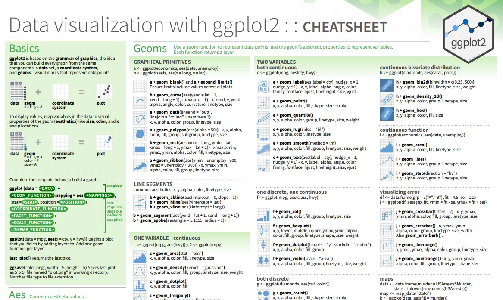
Data Kontinu - Boxplot
Mari kita visualisasikan variabilitas dengan boxplot untuk mendapatkan gambaran sebaran yang lebih baik.
Data Kontinu - Boxplot
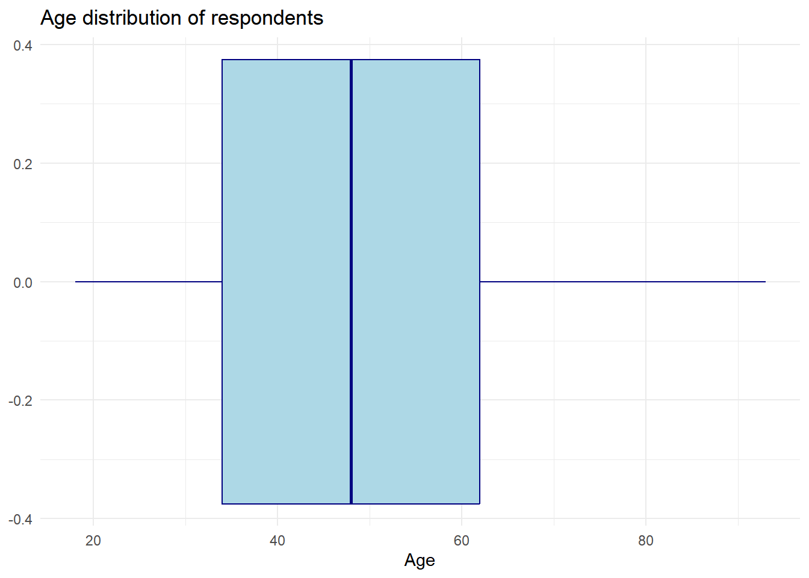
Data Kategorikal - Bar Chart untuk Distribusi Frekuensi
Variabel
ageadalah data numerik / kontinu. Kita tidak bisa menerapkanmean(),median()dan ukuran tendensi sentral lainnya pada data kategorikal sepertiage_groupatauemployment_status. Namun, kita bisa memvisualisasikannya.Saat berhadapan dengan data kategorikal, pertama-tama perhatikan apakah Anda ingin memvisualisasikan proporsi atau distribusi frekuensi.
Mari kita visualisasikan distribusi frekuensi peserta survei berdasarkan
country:
Data Kategorikal - Bar Chart untuk Distribusi Frekuensi
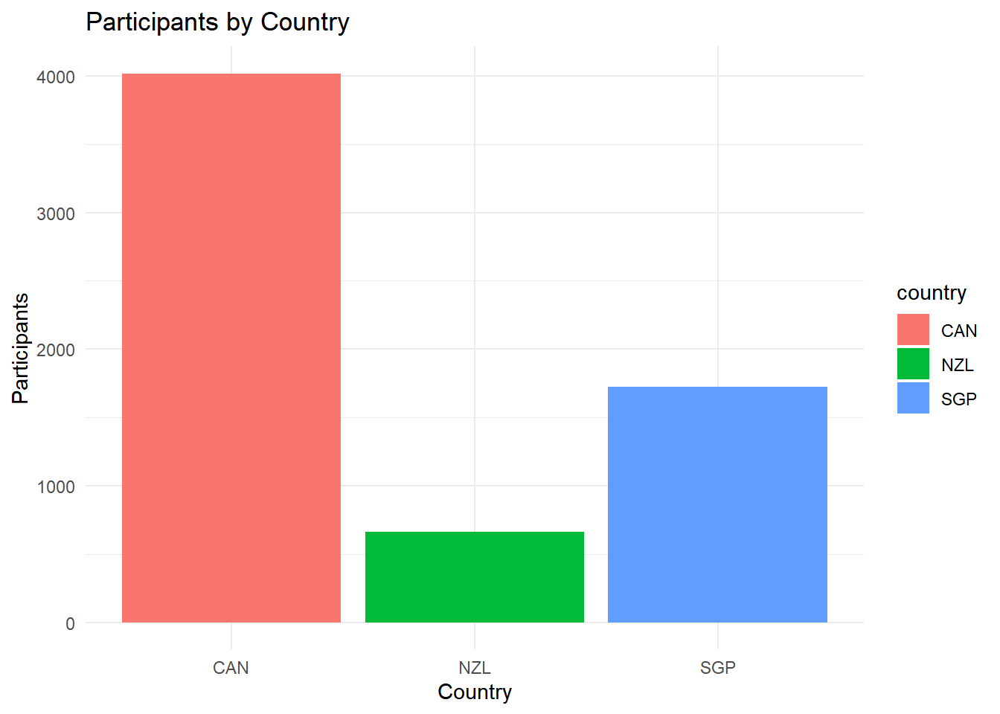
Data Kategorikal - Pie Chart untuk Proporsi
Ketika kita ingin menunjukkan proporsi (yaitu dalam hal “bagian dari keseluruhan”), kita harus terlebih dahulu menghitung proporsi dengan count()
Mari kita buat dataframe baru bernama wvs_country_proportion untuk menyimpan data ini.
# A tibble: 3 × 3
country n proportion
<fct> <int> <dbl>
1 CAN 4018 0.628
2 NZL 660 0.103
3 SGP 1725 0.269Data Kategorikal - Pie Chart untuk Proporsi
Kemudian, kita gunakan tabel proporsi ini untuk membuat pie chart dengan menambahkan layer coord_polar() setelah geom_bar() dan beberapa perubahan pada aes() dan geom_bar()
Data Kategorikal - Pie Chart untuk Proporsi
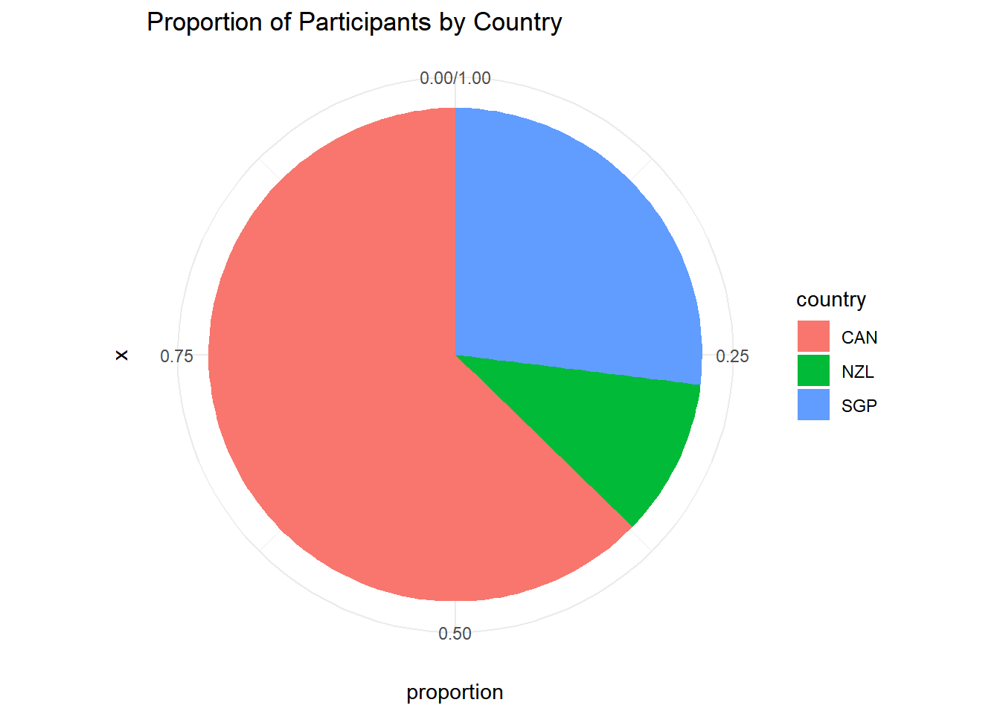
Latihan Cek - Grammar of Graphics
Menggunakan dataset wvs_cleaned:
Buat histogram yang memvisualisasikan distribusi financial_satisfaction
Latihan Cek - Grammar of Graphics
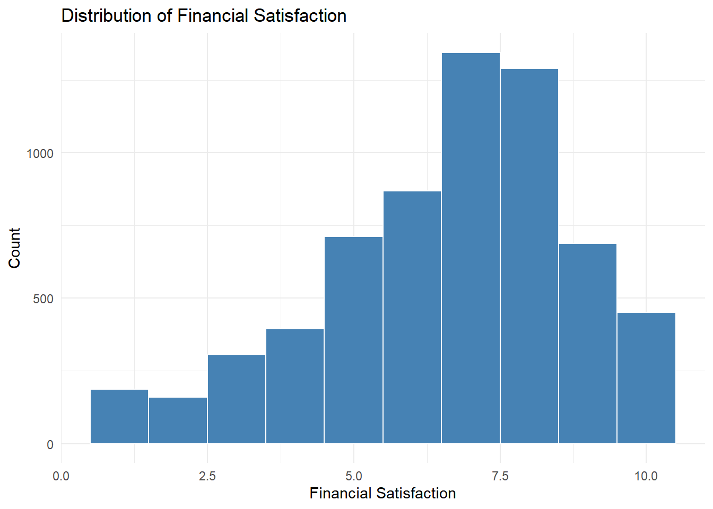
Statistik Deskriptif Bivariat + Visualisasi
Tiga Kombinasi dalam Statistik Deskriptif Bivariat
Statistik deskriptif bivariat mendeskripsikan dan merangkum hubungan antara dua variabel dalam dataset Anda tanpa membuat inferensi tentang populasi yang lebih besar. Termasuk di dalamnya ukuran numerik seperti korelasi atau kovarians, dan visualisasi seperti scatterplot, boxplot berdampingan, atau tabel kontingensi.
Bayangkan sebagai potret bagaimana dua variabel saling berhubungan dalam data Anda saat ini.
Karena data bisa kontinu atau kategorikal, ada tiga kombinasi saat kita berurusan dengan statistik deskriptif bivariat:
- Keduanya kategorikal (misalnya
age_groupdancountry) - Keduanya kontinu (misalnya
financial_satisfactiondanlife_satisfaction) - Satu kontinu, satu kategorikal (misalnya
countrydanlife_satisfaction)
Keduanya Kategorikal
Memeriksa hubungan antara variabel kategorikal
Melihat distribusi gabungan dan proporsi
Membandingkan komposisi kelompok
Pertama, mari kita buat tabel kontingensi dari age_group dan country!
Keduanya Kategorikal - Tabel Proporsi
Kita juga bisa membuat tabel proporsi seperti yang kita lakukan sebelumnya
`summarise()` has grouped output by 'country'. You can override using the
`.groups` argument.# A tibble: 12 × 4
# Groups: country [3]
country age_group n prop
<fct> <chr> <int> <dbl>
1 CAN 18-28 712 0.177
2 CAN 29-44 1232 0.307
3 CAN 45-60 1061 0.264
4 CAN 61+ 1013 0.252
5 NZL 18-28 27 0.0409
6 NZL 29-44 119 0.180
7 NZL 45-60 222 0.336
8 NZL 61+ 292 0.442
9 SGP 18-28 246 0.143
10 SGP 29-44 511 0.296
11 SGP 45-60 550 0.319
12 SGP 61+ 418 0.242 Keduanya Kategorikal - Bar Chart
Untuk data kategorikal seperti ini, kita bisa menggunakan barchart untuk memvisualisasikan distribusi frekuensi. Stacked bar chart dapat digunakan untuk memvisualisasikan proporsi.
Keduanya Kategorikal - Bar Chart
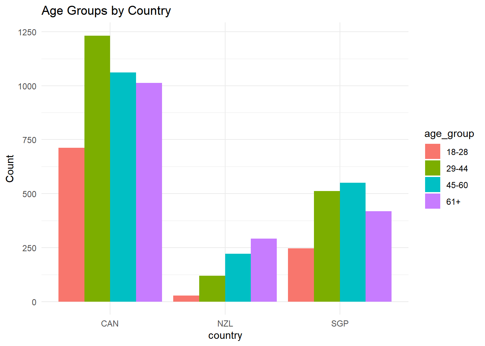
Keduanya Kategorikal - Stacked Bar Chart
Ubah position = "dodge" menjadi position = "stack" untuk menumpuk bar chart
Keduanya Kategorikal - Stacked Bar Chart
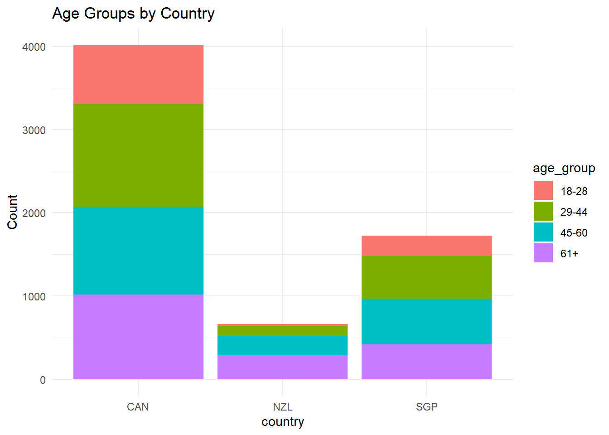
Keduanya Kategorikal - Percent-stacked Bar Chart
Untuk mendapatkan gambaran proporsi yang lebih baik untuk setiap negara, kita bisa menggunakan percent stacked bar chart.
Kodenya mirip dengan bar chart sebelumnya; kita hanya perlu mengubah argumen position menjadi position = "fill"
Keduanya Kategorikal - Percent-stacked Bar Chart
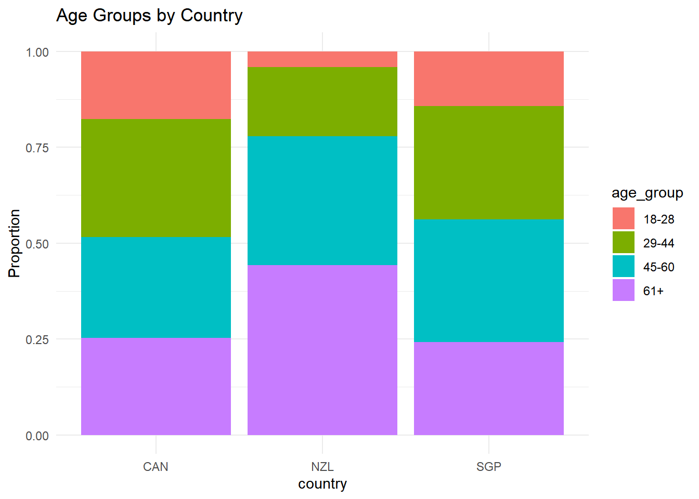
Keduanya Kontinu
Memeriksa hubungan linear
Mencari pola dan tren
Mengidentifikasi potensi outlier
Mari kita periksa terlebih dahulu korelasi antara financial_satisfaction dan life_satisfaction
Keduanya Kontinu - Jitter / Scatterplot
Mari kita visualisasikan kedua variabel bersama-sama dengan jitter / scatterplot!
Keduanya Kontinu - Jitter / Scatterplot
`geom_smooth()` using formula = 'y ~ x'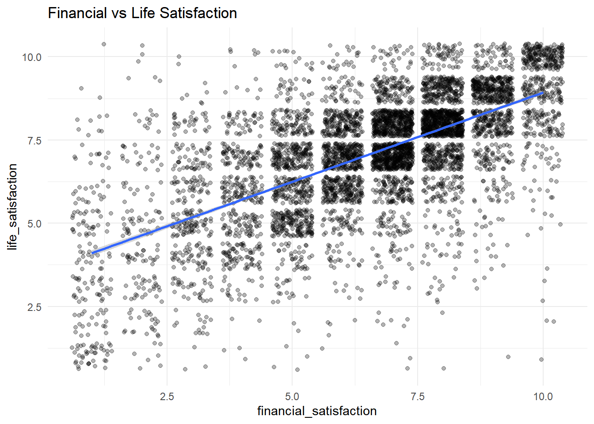
Satu Kontinu, Satu Kategorikal - Tabel Ringkasan
Membandingkan distribusi antar kelompok
Mengidentifikasi perbedaan antar kelompok
Memeriksa sebaran dalam kelompok
Mari kita lakukan rekap dari minggu lalu dan dapatkan statistik ringkasan untuk life_satisfaction dari setiap country
# A tibble: 3 × 4
country mean_satisfaction median_satisfaction sd_satisfaction
<fct> <dbl> <dbl> <dbl>
1 CAN 7.04 7 1.81
2 NZL 7.60 8 1.79
3 SGP 7.06 7 1.78Satu Kontinu, Satu Kategorikal - Boxplot
Untuk mendapatkan gambaran yang lebih baik tentang variasi dan sebaran data, mari kita visualisasikan dengan boxplot berdampingan
Satu Kontinu, Satu Kategorikal - Boxplot
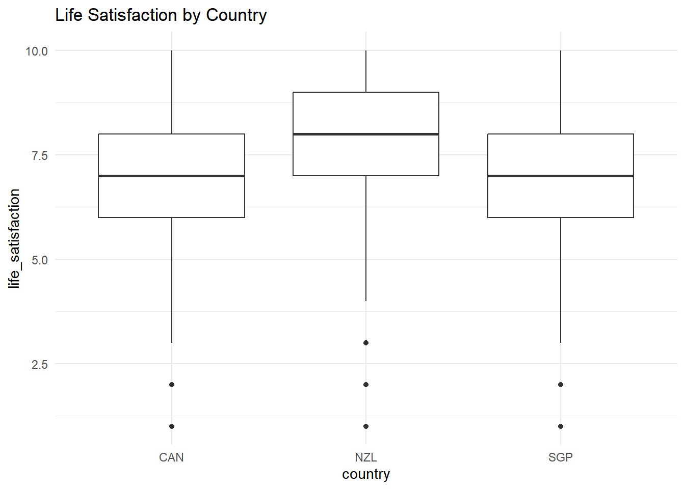
Satu Kontinu, Satu Kategorikal (lanjutan) - Boxplot dan Violin Plot Berlapis
Kita juga bisa melapisi boxplot dengan violin plot untuk mendapatkan gambaran distribusi setiap kelompok yang lebih baik.
Satu Kontinu, Satu Kategorikal (lanjutan) - Boxplot dan Violin Plot Berlapis
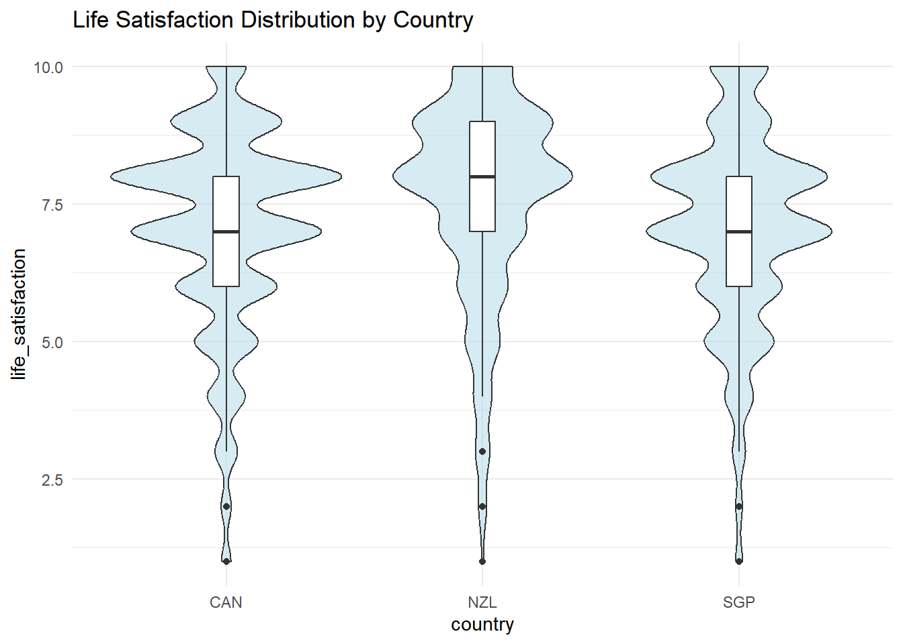
Cara Menyimpan Gambar - ggsave
Ada dua cara untuk melakukan ini:
Melalui
ggsaveCara klik manual di RStudio
Berikut adalah cara ggsave:
# simpan grafik ke dalam objek alih-alih langsung menampilkannya seperti yang kita lakukan selama ini
boxplot_obj <- wvs_cleaned |>
ggplot(aes(x = age)) +
geom_boxplot(fill = "lightblue", color = "navy") +
labs(title = "Age distribution of respondents",
x = "Age") +
theme_minimal()
# masukkan grafik yang tersimpan ke ggsave dan beri nama file
ggsave("fig-output/boxplot_1.jpg", boxplot_obj) Cara Menyimpan Gambar - Klik Manual
- Buka tab
plotsdi panel kanan - Klik tombol
Export. Anda bisa mengekspor plot sebagai file gambar, atau sebagai PDF. - Penting: agar file Anda tetap terorganisir, simpan gambar yang diekspor ke folder
fig-outputyang telah Anda buat di Sesi 1.
Menggunakan Facet untuk Visualisasi Lebih Kompleks
Membandingkan pola di berbagai subkelompok
Mengidentifikasi efek interaksi
Menjaga kejelasan visual dengan hubungan yang kompleks
Facet grid berguna ketika kita memiliki lebih dari dua variabel untuk divisualisasikan. Namun, jika digunakan secara berlebihan bisa menjadi terlalu kompleks
Menggunakan Facet untuk Visualisasi Lebih Kompleks
`geom_smooth()` using formula = 'y ~ x'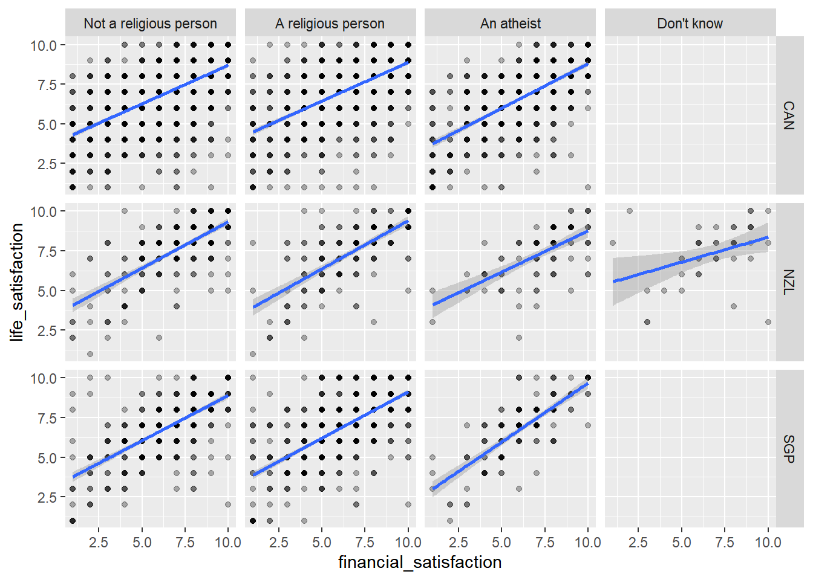
Apakah Lebih Rumit = Lebih Baik?
Visualisasi yang lebih rumit dan kompleks tidak selalu berarti lebih baik!
Lihatlah visualisasi pemenang penghargaan oleh Simon Scarr

Akhir Sesi 3!
Ingat strateginya:
- Buka dokumentasi/cheatsheet ggplot
- Tentukan berapa banyak variabel yang terlibat. Apakah hanya satu? dua? lebih dari dua?
- Tentukan apakah variabel tersebut kategorikal atau kontinu. Jika Anda memiliki lebih dari satu, apakah keduanya kategorikal? satu kategorikal + satu kontinu?
- Lihat dokumentasi untuk menentukan jenis visualisasi mana yang cocok untuk variabel Anda.
Kunjungi R Graph gallery untuk inspirasi dan contoh kode!
Sesi berikutnya: statistik inferensial di R menggunakan data WVS
Lampiran
Latihan di Rumah #1
Buat barchart yang memvisualisasikan frekuensi religiousity
Latihan di Rumah #1
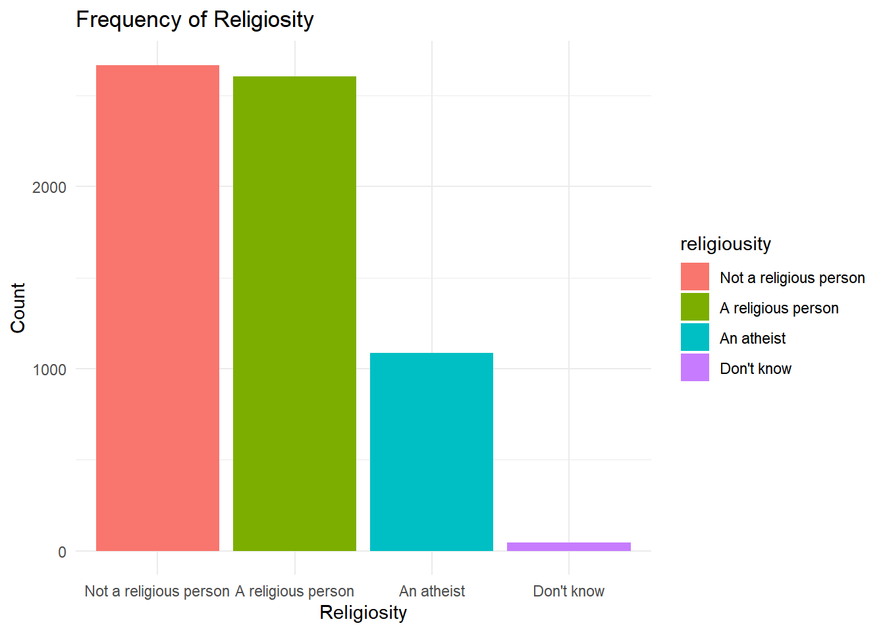
Latihan di Rumah #2
Buat boxplot berdampingan yang memvisualisasikan political_scale untuk setiap sex.
Latihan di Rumah #2
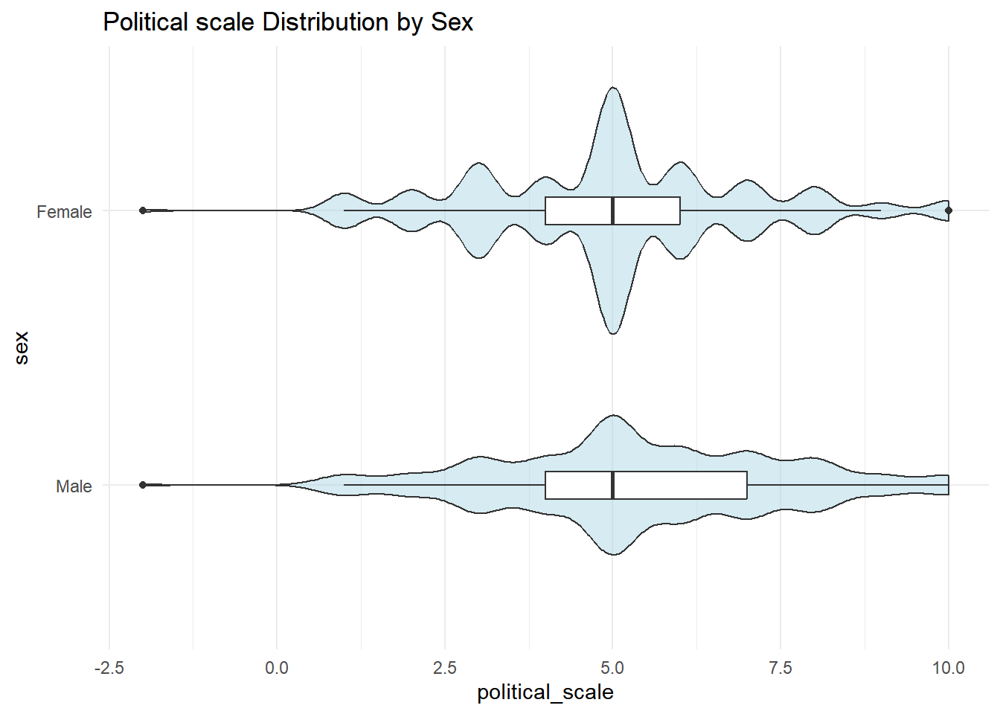
Plot Korelasi
Ketika ada lebih dari dua variabel kontinu yang ingin dieksplorasi, peta korelasi terkadang digunakan. Kita bisa melakukannya dengan ggplot, tetapi jauh lebih mudah menggunakan fungsi corrplot() dari paket corrplot.
Mari kita visualisasikan peta korelasi untuk ketiga variabel ini.
Plot Korelasi
Warning: package 'corrplot' was built under R version 4.4.3corrplot 0.95 loaded# pilih semua kolom untuk perhitungan korelasi, simpan ke columns_for_corr
columns_for_corr <- wvs_cleaned |>
select(financial_satisfaction, life_satisfaction, age)
# masukkan columns_for_corr ke fungsi cor(), dan simpan hasilnya ke cor_matrix
cor_matrix <- cor(columns_for_corr)
# visualisasikan cor_matrix dengan corrplot()!
corrplot(cor_matrix,
method = "shade", # tampilkan kekuatan korelasi sebagai gradasi warna
addCoef.col = "black", tl.col = "black") # beri label koefisien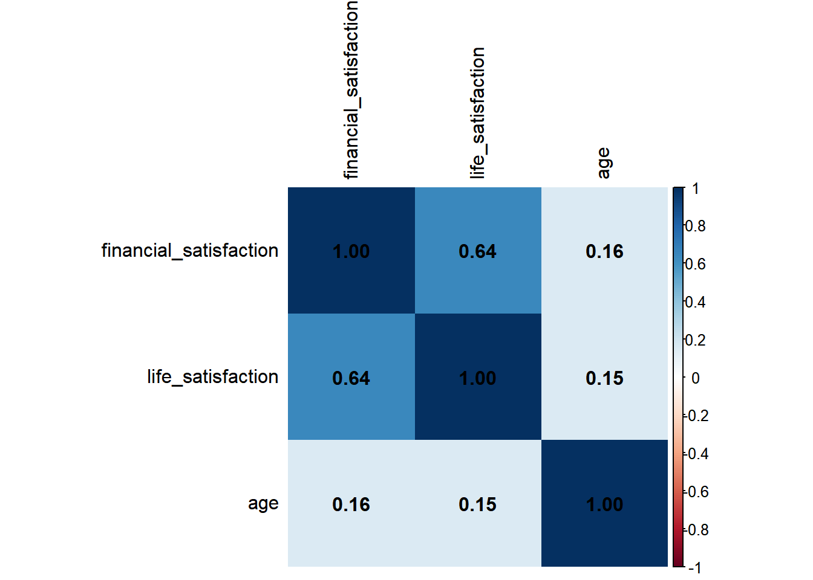
Plot Korelasi - Kode Lebih Singkat
Kita bisa mempersingkat kode di slide sebelumnya menggunakan maggritr pipe |> seperti ini:
Penyegaran:
Perhatikan bahwa kita tidak perlu memasukkan nama kolom ke fungsi cor() dan corrplot(). Ini karena maggritr pipe |> bertindak sebagai “ban berjalan” yang mengambil output dari satu langkah dan langsung meneruskannya ke langkah berikutnya.
Plot Korelasi - Kode Lebih Singkat

ISEI Workshop: Analisis Regresi & SEM dengan RStudio